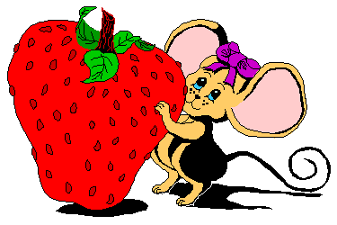

Welcome to
Jenni M's Personal Web Space
- strawberryJAMM Designs
- This is my professional portfolio site as I am a User Experience Designer, specializing
in interaction design, information architecture, usability engineering and front end design for
web and desktop applications.
As my professional site, this is the most current and up to date.
The other pages and sites noted below are mainly archival in nature, some having existed since
the early 1990's.
Their content and designs have not been modified since the early 2k's.
- Lord Byron Pages
- A Web Site containing facts and flights of fancy about The Right
Honourable George Gordon Lord Byron, 6th Baron Byron; notorious
lover, lunatic and poet.
Page designed and maintained for my mother, Anne Mott.
- Mystara
3E/d20
- The semiofficial home of Mystara™ for
the Third Edition of Dungeons & Dragons/d20 Rules (which
is fondly referred to as Mystara-3E/d20).
This site provides a selection of game rules and related information that a
DM can use to start and run a Third Edition Dungeons & Dragons/d20
Rules campaign in any of the three campaign settings that make up
the realms of Mystara: The
Known World, The Savage Coast,
and The Hollow World.
- Jenni M's Mystara Files
- An archive of modules, house rules and and other information created for the D&D
campaign world of Mystara.
- The Original Strawberry Facts Page [ARCHIVED]
- A Web Site dedicated to all things strawberry related:
recipes, gardening tips, nutrition, trivia, festivities and more. Find out
all you ever wanted to know, and more, about the beautiful, delicious, red
fruit that we call the strawberry.
This is the first web site I ever created - it started in 1992 and was maintained
until 2001. I keep it online entirely for nostalgic reasons.